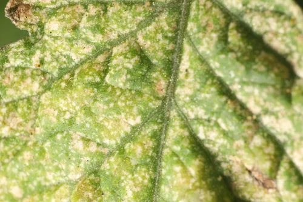

叶面密布黄白色针点
针点又密又细，多在叶面。叶背有细丝和很小的虫时，用叶螨那一条。散开的较大斑点用散斑那一条。

先看哪里
沿主叶脉和叶背寻找活动螨虫、细网或残余虫皮。
先观察，再冲洗或搬动。找到看上去最新的伤处，轻轻翻看叶背，别晃动枝条，也看一眼叶柄和茎连接的地方。用放大镜或手机近拍，能看到整株照里容易遗漏的细节。
可能原因与下一步
多种刺吸害虫可留下密集细点。用放大镜确认，隔离有虫的盆栽。
怎样区分相似问题
比较向阳叶与遮阴叶。单侧漂白可能与暴晒有关；密集小点伴叶背活虫，更需排查虫害。
把白纸放在有点斑的叶下轻拍，用放大镜看纸上活动的小点，再查叶背有无细网或蜕皮。没看到活动物时换一片刚受影响的叶复查，再判断虫种。
现在可以做什么
检查叶背并拍下斑点分布；不要把长期遮阴的植物突然移入全日照。
观察时固定白纸并避风，尤其在高倍放大时，被风吹动的尘粒很容易被看成活虫。发现虫体时，保留一张特写，也拍下植株受损位置。
接下来观察什么
复查遮阴叶是否也新增浅斑；若有，记录查到的虫体或附着物。
检查细小失绿点与叶背取食点是否对应
选细小失绿点清晰的一片叶，检查同一位置的背面。漆状黑滴、蜕皮或网蝽活虫是一组线索，细网与移动的小螨是另一组。仅看叶面失绿无法区分。